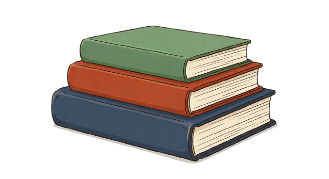

<!DOCTYPE html>
<html lang="ja">
<head>
    <meta charset="UTF-8">
    <meta name="viewport" content="width=device-width, initial-scale=1.0">
    <title>AI学習アシスタンチE/title>
    <link rel="stylesheet" href="style.css">
</head>
<body>

    <div class="background-blobs">
        <div class="blob blob-1"></div>
        <div class="blob blob-2"></div>
        <div class="blob blob-3"></div>
    </div>

    <div class="container">

        <div id="home-screen" class="screen active">
            <div class="glass-card">
                <div class="home-layout">
                    
                    <div class="left-panel">
                        <div class="quick-actions">
                            <button class="action-card" onclick="switchScreen('review')">
                                
                                <span class="action-icon-styled" style="display:none;">📚</span>
                                <div class="action-text">
                                    <h3>復習を<br>はじめめE/h3>
                                </div>
                            </button>
                            
                            <button class="action-card accent-card" onclick="switchScreen('planner')">
                                <span class="action-icon-styled">✨</span>
                                <div class="action-text">
                                    <h3>AIおすすめ<br>復習�Eラン</h3>
                                </div>
                            </button>

                            <button class="action-card" onclick="switchScreen('test')">
                                <span class="action-icon-styled">📝</span>
                                <div class="action-text">
                                    <h3>チE��チE/h3>
                                </div>
                            </button>
                        </div>
                    </div>

                    <div class="right-panel">
                        <div style="display: flex; justify-content: space-between; align-items: center; margin-bottom: 12px; width: 100%;">
                            <h3 class="panel-subtitle" style="margin-bottom: 0;">📜 最近�E学習記録</h3>
                            <a href="record/record.html" style="font-size: 0.88rem; color: var(--accent-blue); text-decoration: none; font-weight: 600; display: flex; align-items: center; gap: 4px; transition: color 0.2s;" onmouseover="this.style.color='var(--accent-purple)'" onmouseout="this.style.color='var(--accent-blue)'">すべて表示 ➁E/a>
                        </div>
                        
                        <div class="search-box-container">
                            <span class="search-icon">🔍</span>
                            <input type="text" id="search-input" placeholder="キーワードを入力して検索..." oninput="handleSearch()">
                        </div>
                        
                        <div class="subject-filter-container">
                            <button class="filter-btn active" onclick="filterHistory('すべて')">すべて</button>
                            <button class="filter-btn" onclick="filterHistory('国誁E)">国誁E/button>
                            <button class="filter-btn" onclick="filterHistory('数学')">数学</button>
                            <button class="filter-btn" onclick="filterHistory('琁E��E)">琁E��E/button>
                            <button class="filter-btn" onclick="filterHistory('社企E)">社企E/button>
                            <button class="filter-btn" onclick="filterHistory('英誁E)">英誁E/button>
                        </div>

                        <div id="empty-history-message" class="empty-message hidden">
                            <p>見つかりませんでした、E/p>
                        </div>

                        <div id="history-list" class="history-list-container horizontal-scroll">
                            </div>
                    </div>

                </div>
            </div>
        </div>

        <div id="planner-screen" class="screen">
            <div class="glass-card">
                <div class="planner-screen-header">
                    <h2 class="screen-title">✨ 今日の最適復習�Eラン�E�EI刁E���E�E/h2>
                    <div class="time-tabs">
                        <button class="time-tab active" onclick="switchPlanTime(5)">5刁E/button>
                        <button class="time-tab" onclick="switchPlanTime(10)">10刁E/button>
                        <button class="time-tab" onclick="switchPlanTime(30)">30刁E/button>
                    </div>
                </div>

                <div class="ai-stats-row">
                    <div class="stat-box">
                        <span class="stat-label">🚨 苦手度スコア</span>
                        <span class="stat-value text-red" id="weak-score">78/100</span>
                    </div>
                    <div class="stat-box">
                        <span class="stat-label">💡 琁E��度スコア</span>
                        <span class="stat-value text-blue" id="understand-score">45%</span>
                    </div>
                    <div class="stat-box">
                        <span class="stat-label">🎯 優先弱点単�E</span>
                        <span class="stat-value text-small" id="priority-unit">数学�E�二次関数</span>
                    </div>
                </div>

                <div class="plan-content-box big-box">
                    <div class="plan-details">
                        <p class="plan-summary" id="plan-text">、E刁E��クチE��復習】今日間違えた「二次関数の基礎計算」を1問だけ集中して解き直そう�E�E/p>
                        <span class="plan-balance" id="plan-balance-tag">⚖︁E今日の復翁E90% : 明日の予翁E10%</span>
                    </div>
                    <button class="start-plan-btn" onclick="switchScreen('review')">こ�Eプランで復習スターチE➁E/button>
                </div>

                <button class="back-button" onclick="switchScreen('home')">🏠 戻めE/button>
            </div>
        </div>

        <div id="review-screen" class="screen">
            <div class="glass-card">
                <h2 class="screen-title">授業冁E��を復習すめE/h2>
                <div class="upload-zone" id="upload-zone">
                    
                    <span style="display:none; font-size:4rem;">📚</span>
                    <p>ノ�Eトやプリント�E写真をアチE�Eロードして復習しよう</p>
                    
                    <input type="file" id="upload-input" accept="image/*" class="hidden" onchange="handleFileSelect(event)">
                    <button class="glass-button" onclick="triggerFileInput()">写真をえら�E</button>
                </div>
                
                <div id="preview-area" class="hidden" style="display: flex; flex-direction: column; align-items: center; justify-content: center; width: 100%; max-width: 450px; margin-bottom: 20px;">
                    <p style="margin-bottom: 15px; font-weight: bold; font-size: 1.1rem;">選択された写真�E�E/p>
                    
                    
                    <div style="display: flex; flex-direction: column; gap: 12px; width: 100%; align-items: center;">
                        <button class="start-plan-btn" style="width: 220px; background: linear-gradient(135deg, #3498db, #2980b9); box-shadow: 0 4px 12px rgba(52, 152, 219, 0.25);" onclick="startReviewProcess()">🚀 復習を始めめE/button>
                        <button class="back-button" onclick="switchScreen('home')" style="width: 220px;">🏠 戻めE/button>
                    </div>

                    <div style="margin-top: 15px; display: flex; gap: 15px;">
                        <span style="font-size: 0.85rem; color: #7f8c8d; cursor: pointer; text-decoration: underline;" onclick="triggerFileInput()">画像を差し替える</span>
                        <span style="font-size: 0.85rem; color: #e74c3c; cursor: pointer; text-decoration: underline;" onclick="clearFileSelect()">削除する</span>
                    </div>
                </div>


                <button class="back-button" id="review-back-button" onclick="switchScreen('home')">🏠 戻めE/button>
            </div>
        </div>

        <div id="test-screen" class="screen">
            <div class="glass-card">
                <h2 class="screen-title">実力チE��トに挑戦</h2>
                <div class="upload-zone">
                    <span style="font-size:4rem;">📝</span>
                    <p>現在の学習記録に基づぁE��チE��トを生�EしまぁE/p>
                    <button class="glass-button" onclick="startTest()">チE��トを開始すめE/button>
                </div>
                <button class="back-button" onclick="switchScreen('home')">🏠 戻めE/button>
            </div>
        </div>

        <!-- 📄 チE��ト用紙画面 -->
        <div id="test-paper-screen" class="screen">
            <div class="glass-card" style="justify-content: flex-start; overflow-y: auto; padding: 25px;">
                <div class="test-paper">
                    <div class="test-paper-header">
                        <div class="test-title">実力診断チE��チE/div>
                        <div class="test-meta">
                            <span class="meta-field">実施日: <span id="test-date">2026/06/11</span></span>
                            <span class="meta-field">氏名: <input type="text" value="学翁E太郁E class="test-name-input"></span>
                            <div class="score-display hidden" id="test-score-display">
                                <span class="score-label">得点</span>
                                <span class="score-value" id="test-score-val">0</span>
                                <span class="score-total">/100</span>
                            </div>
                        </div>
                    </div>
                    
                    <div class="test-questions">
                        <!-- 第1啁E-->
                        <div class="test-question-item">
                            <div class="q-title">
                                <span class="q-num">【問 1、E/span> 二次関数 <span style="font-family: serif; font-style: italic;">y = x² - 6x + 5</span> の頂点の座標を求めよ、Espan class="q-points">�E�E0点�E�E/span>
                            </div>
                            <div class="q-answer-area">
                                答！E( <input type="text" id="q1-ans-x" placeholder="x" class="q-input-short"> , <input type="text" id="q1-ans-y" placeholder="y" class="q-input-short"> )
                            </div>
                            <div class="q-feedback hidden" id="q1-feedback">
                                <span class="grade-mark mark-correct">◯</span>
                                <div class="q-explanation">
                                    <strong>【解説、E/strong><br>
                                    平方完�Eを行うと、Ebr>
                                    <span style="font-family: serif;">y = (x - 3)² - 9 + 5 = (x - 3)² - 4</span><br>
                                    となるため、E��点の座標�E <strong>(3, -4)</strong> です、E
                                </div>
                            </div>
                        </div>

                        <!-- 第2啁E-->
                        <div class="test-question-item">
                            <div class="q-title">
                                <span class="q-num">【問 2、E/span> 漢斁E��おける「置き字」（「而」「於」など�E��E、書き下し斁E��する際、原剁E��してどのように処琁E��るか答えよ、Espan class="q-points">�E�E5点�E�E/span>
                            </div>
                            <div class="q-answer-area">
                                答！E<input type="text" id="q2-ans" placeholder="どのように処琁E��るか入力してください" class="q-input-long">
                            </div>
                            <div class="q-feedback hidden" id="q2-feedback">
                                <span class="grade-mark mark-correct">◯</span>
                                <div class="q-explanation">
                                    <strong>【解説、E/strong><br>
                                    置き字�E斁E��造を整える役割を持ちますが、書き下し斁E��は<strong>原則として読まず、書きもしません</strong>�E�無視して処琁E��ます）、E
                                </div>
                            </div>
                        </div>

                        <!-- 第3啁E-->
                        <div class="test-question-item">
                            <div class="q-title">
                                <span class="q-num">【問 3、E/span> 不規則動詁E「go」（行く�E��E過去形をスペルで答えよ、Espan class="q-points">�E�E5点�E�E/span>
                            </div>
                            <div class="q-answer-area">
                                答！E<input type="text" id="q3-ans" placeholder="過去形を�E劁E class="q-input-medium">
                            </div>
                            <div class="q-feedback hidden" id="q3-feedback">
                                <span class="grade-mark mark-correct">◯</span>
                                <div class="q-explanation">
                                    <strong>【解説、E/strong><br>
                                    「go」�E過去形は <strong>went</strong> です（過去刁E���E gone�E�、E
                                </div>
                            </div>
                        </div>
                    </div>

                    <!-- アクションエリア -->
                    <div class="test-actions">
                        <button class="start-plan-btn" id="grade-test-btn" onclick="gradeTest()" style="background: linear-gradient(135deg, #e74c3c, #c0392b); box-shadow: 0 4px 12px rgba(231, 76, 60, 0.25);">📝 採点する</button>
                        <button class="start-plan-btn hidden" id="finish-test-btn" onclick="finishTest()" style="background: linear-gradient(135deg, #2ecc71, #27ae60); box-shadow: 0 4px 12px rgba(46, 204, 113, 0.25);">🎯 結果を記録して終亁E/button>
                    </div>
                </div>
                
                <button class="back-button" id="test-abort-btn" onclick="switchScreen('test')" style="margin-top: 25px; align-self: center;">🏠 戻めE/button>
            </div>
        </div>

        <!-- 🧠 AI解析中�E�ローチE��ング�E�画面 -->
        <div id="loading-screen" class="screen">
            <div class="glass-card" style="gap: 20px;">
                <div class="loader-container">
                    <div class="pulse-ring"></div>
                    <span style="font-size: 2.5rem; animation: bounce 1.5s infinite;">🧠</span>
                </div>
                <h3 style="font-weight: 700; margin-top: 15px;">AIがノートを刁E��中...</h3>
                <p style="color: #7f8c8d; font-size: 0.9rem;">苦手なポイントや類題を自動で作�EしてぁE��ぁE/p>
            </div>
        </div>

        <!-- ✨ AIのピンポイント解説画面 -->
        <div id="ai-response-screen" class="screen">
            <div class="glass-card" style="justify-content: flex-start; overflow-y: auto; padding: 25px;">
                <h2 class="screen-title" style="margin-bottom: 15px; align-self: flex-start;">✨ AIのピンポイント解説授業</h2>
                
                <div class="teaching-layout">
                    <!-- 左側�E�ノート�Eレビュー -->
                    <div class="left-teaching-panel" style="flex: 1; display: flex; flex-direction: column; gap: 12px; max-width: 350px; width: 100%;">
                        <h4 style="font-size: 0.95rem; font-weight: 600; color: #546e7a;">📷 アチE�EロードしたノーチE/h4>
                        <div style="flex: 1; border-radius: 18px; overflow: hidden; background: rgba(0,0,0,0.03); border: 1px solid var(--glass-border); display: flex; align-items: center; justify-content: center; max-height: 320px; min-height: 200px;">
                            
                        </div>
                        <span style="font-size: 0.8rem; color: #7f8c8d; text-align: center;">※画像�Eレビュー</span>
                    </div>

                    <!-- 右側�E�AIの持E��エリア -->
                    <div class="right-teaching-panel" style="flex: 1.5; display: flex; flex-direction: column; gap: 15px; width: 100%; height: 100%;">
                        <!-- チャチE��欁E-->
                        <div class="ai-chat-section" style="background: rgba(255, 255, 255, 0.55); border: 1px solid var(--glass-border); border-radius: 20px; padding: 20px; display: flex; flex-direction: column; gap: 15px; text-align: left; height: 100%;">
                            <h4 style="font-size: 1rem; font-weight: 700; color: var(--accent-purple); display: flex; align-items: center; gap: 8px;">💬 AIの解説授業�E�対話モード！E/h4>
                            <div id="ai-chat-log" style="display: flex; flex-direction: column; gap: 12px; flex: 1; overflow-y: auto; padding: 10px; background: rgba(255,255,255,0.3); border-radius: 16px; border: 1px solid rgba(0,0,0,0.02); min-height: 250px;">
                                <div class="chat-message ai" style="display: flex; gap: 8px; align-self: flex-start;">
                                    <span style="font-size: 1.2rem;">🤁E/span>
                                    <p>アチE�Eロードされたノ�EトにつぁE��何でも聞ぁE��ね�E�わからなぁE��刁E��解説してほしい所があれ�E質問してください、E/p>
                                </div>
                            </div>
                            <div style="display: flex; gap: 10px;">
                                <input type="text" id="chat-question-input" placeholder="質問を入力してください...�E�例：平方完�EのめE��方を教えて�E�E style="flex: 1; padding: 12px 16px; border-radius: 14px; border: 1px solid var(--glass-border); font-size: 0.9rem; outline: none; background: rgba(255,255,255,0.7);" onkeypress="handleChatKeyPress(event)">
                                <button class="glass-button" style="padding: 10px 20px; font-size: 0.9rem;" onclick="sendChatQuestion()">送信</button>
                            </div>
                        </div>
                    </div>
                </div>

                <div style="display: flex; gap: 15px; width: 100%; justify-content: flex-end; margin-top: 15px; padding-top: 10px; border-top: 1px solid rgba(0,0,0,0.06);">
                    <button class="back-button" onclick="switchScreen('review')" style="background: rgba(255, 255, 255, 0.6);">📷 写真を選び直ぁE/button>
                    <button class="start-plan-btn" onclick="finishReviewAndSave()" style="background: linear-gradient(135deg, #2ecc71, #27ae60); box-shadow: 0 4px 12px rgba(46, 204, 113, 0.25);">🎯 復習を完亁E��てホ�Eムへ</button>
                </div>
            </div>
        </div>

        <!-- 📜 過去の学習履歴・対話詳細画面 -->
        <div id="history-chat-screen" class="screen">
            <div class="glass-card" style="justify-content: flex-start; overflow-y: auto; padding: 25px;">
                <h2 class="screen-title" id="history-chat-title" style="margin-bottom: 15px; align-self: flex-start;">✨ 過去の解説授業�E�履歴�E�E/h2>
                
                <div class="teaching-layout">
                    <!-- 左側�E�ノート�Eレビュー -->
                    <div class="left-teaching-panel" style="flex: 1; display: flex; flex-direction: column; gap: 12px; max-width: 350px; width: 100%;">
                        <h4 style="font-size: 0.95rem; font-weight: 600; color: #546e7a;">📷 学習時のノ�Eト�E賁E��</h4>
                        <div id="history-image-container" style="flex: 1; border-radius: 18px; overflow: hidden; background: rgba(0,0,0,0.03); border: 1px solid var(--glass-border); display: flex; align-items: center; justify-content: center; max-height: 320px; min-height: 200px; position: relative;">
                            
                            <div id="history-chat-placeholder" class="hidden" style="font-size: 5rem; text-align: center;">📊</div>
                        </div>
                        <span id="history-chat-date" style="font-size: 0.85rem; color: #7f8c8d; text-align: center; font-weight: 600; margin-top: 5px;">学習日�E�E026/06/05</span>
                    </div>

                    <!-- 右側�E�会話履歴エリア -->
                    <div class="right-teaching-panel" style="flex: 1.5; display: flex; flex-direction: column; gap: 15px; width: 100%; height: 100%;">
                        <div class="ai-chat-section" style="background: rgba(255, 255, 255, 0.55); border: 1px solid var(--glass-border); border-radius: 20px; padding: 20px; display: flex; flex-direction: column; gap: 15px; text-align: left; height: 100%;">
                            <h4 style="font-size: 1rem; font-weight: 700; color: var(--accent-purple); display: flex; align-items: center; gap: 8px;">💬 授業中の会話ログ</h4>
                            <div id="history-chat-log" style="display: flex; flex-direction: column; gap: 12px; flex: 1; overflow-y: auto; padding: 10px; background: rgba(255,255,255,0.3); border-radius: 16px; border: 1px solid rgba(0,0,0,0.02); min-height: 250px;">
                                <!-- チャチE��履歴が動皁E��表示されまぁE-->
                            </div>
                            <div style="display: flex; gap: 10px;">
                                <input type="text" id="history-chat-input" placeholder="こ�E会話の続きを質問すめE..�E�後日AI連携予定！E style="flex: 1; padding: 12px 16px; border-radius: 14px; border: 1px solid var(--glass-border); font-size: 0.9rem; outline: none; background: rgba(255,255,255,0.7);" onkeypress="handleHistoryChatKeyPress(event)">
                                <button class="glass-button" style="padding: 10px 20px; font-size: 0.9rem;" onclick="sendHistoryChatQuestion()">送信</button>
                            </div>
                        </div>
                    </div>
                </div>

                <div style="display: flex; gap: 15px; width: 100%; justify-content: flex-end; margin-top: 15px; padding-top: 10px; border-top: 1px solid rgba(0,0,0,0.06);">
                    <button class="back-button" onclick="switchScreen('home')" style="width: 150px; background: rgba(255, 255, 255, 0.85);">🏠 ホ�Eムへ戻めE/button>
                </div>
            </div>
        </div>

        <!-- ⚙︁E設定画面 -->
        <div id="settings-screen" class="screen">
            <div class="glass-card" style="position: relative; justify-content: flex-start; align-items: stretch; padding: 40px; overflow-y: auto;">
                <!-- 左上�E戻る�Eタン -->
                <button class="back-button" onclick="switchScreen('home')" style="position: absolute; top: 30px; left: 30px;">⬁E戻めE/button>
                
                <!-- 設定コンチE��チE-->
                <div class="settings-container" style="margin-top: 50px; width: 100%; max-width: 600px; margin-left: auto; margin-right: auto; display: flex; flex-direction: column; gap: 25px; text-align: left; box-sizing: border-box;">
                    <h2 class="screen-title" style="margin-bottom: 5px; font-weight: 800; display: flex; align-items: center; gap: 10px;">⚙︁Eアシスタント設宁E/h2>
                    <p style="color: #7f8c8d; font-size: 0.9rem; margin-bottom: 15px;">学習をより楽しく、あなたに合わせるためのカスタマイズを行います、E/p>
                    
                    <!-- セクション�E�Gemini API設宁E-->
                    <div class="settings-section" style="background: rgba(255, 255, 255, 0.6); border: 2px solid var(--accent-purple); border-radius: 20px; padding: 25px; display: flex; flex-direction: column; gap: 15px; box-shadow: 0 4px 15px rgba(155, 89, 182, 0.1);">
                        <label for="gemini-api-key" style="font-size: 1.15rem; font-weight: 700; color: var(--text-color); display: flex; align-items: center; gap: 8px;">
                            🔑 Gemini API設宁E
                        </label>
                        <p style="color: #546e7a; font-size: 0.88rem; line-height: 1.5; margin: 0;">
                            本物のAI�E�Eoogle Gemini�E�を使って、あなた�Eノ�Eト�E真を刁E��したり、リアルタイムでチャチE��解説を受けることができます、EPIキーはブラウザに安�Eに保存されます、E
                        </p>
                        <div style="display: flex; flex-direction: column; gap: 8px; width: 100%;">
                            <input type="password" id="gemini-api-key" placeholder="AIzaSy..." style="width: 100%; padding: 12px 16px; border-radius: 14px; border: 1px solid var(--glass-border); font-size: 0.95rem; outline: none; background: rgba(255,255,255,0.85);">
                            <span style="font-size: 0.8rem; color: #7f8c8d;">※ APIキーはGoogle AI Studio等で無料で取得できます。�E力しなぁE��合�E、従来のダミ�E機�E�E�モチE���E�で動作します、E/span>
                        </div>
                        <div style="display: flex; gap: 10px; align-items: center; width: 100%;">
                            <label for="gemini-model-select" style="font-size: 0.9rem; font-weight: 600; color: #546e7a; white-space: nowrap;">使用モチE��:</label>
                            <select id="gemini-model-select" style="padding: 8px 12px; border-radius: 10px; border: 1px solid var(--glass-border); font-size: 0.9rem; outline: none; background: white; flex: 1;">
                                <option value="gemini-3.5-flash">Gemini 3.5 Flash</option>
                                <option value="gemini-2.0-flash">gemini-2.0-flash (最新・高精度)</option>
                                <option value="gemini-1.5-pro">gemini-1.5-pro (高度な推論�E刁E��)</option>
                            </select>
                        </div>
                    </div>

                    <!-- セクション�E�デザインの好み�E�派手か静かか！E-->
                    <div class="settings-section" style="background: rgba(255, 255, 255, 0.5); border: 1px solid var(--glass-border); border-radius: 20px; padding: 25px; display: flex; flex-direction: column; gap: 15px; box-shadow: 0 4px 15px rgba(0,0,0,0.01);">
                        <label for="design-preference-slider" style="font-size: 1.15rem; font-weight: 700; color: var(--text-color); display: flex; align-items: center; gap: 8px;">
                            🎨 好みのチE��インめE��囲気（派手か静かか！E
                        </label>
                        <p style="color: #546e7a; font-size: 0.88rem; line-height: 1.5; margin: 0;">
                            身の回りのモノやチE��インにつぁE��、華めE��で活気�Eあるも�Eと、落ち着ぁE��静かなも�Eのどちらが好みですか�E�E
                        </p>
                        
                        <div class="slider-wrapper" style="margin-top: 10px; width: 100%;">
                            <input type="range" id="design-preference-slider" min="1" max="100" value="50" class="premium-slider" style="width: 100%;">
                            <div class="slider-labels" style="display: flex; justify-content: space-between; margin-top: 8px; font-size: 0.9rem; font-weight: 600; color: #546e7a;">
                                <span>静か・シンプル</span>
                                <span>派手�Eカラフル</span>
                            </div>
                        </div>
                    </div>

                    <!-- セクション�E��E味の対象�E�インドアかアウトドアか！E-->
                    <div class="settings-section" style="background: rgba(255, 255, 255, 0.5); border: 1px solid var(--glass-border); border-radius: 20px; padding: 25px; display: flex; flex-direction: column; gap: 15px; box-shadow: 0 4px 15px rgba(0,0,0,0.01);">
                        <label for="activity-preference-slider" style="font-size: 1.15rem; font-weight: 700; color: var(--text-color); display: flex; align-items: center; gap: 8px;">
                            ⛺ 興味のあるジャンル�E�インドアかアウトドアか！E
                        </label>
                        <p style="color: #546e7a; font-size: 0.88rem; line-height: 1.5; margin: 0;">
                            AIが日常会話めE��強の例え話を�Eす際に役立ちます。読書めE��ームなどのインドア派か、スポ�EチE��旁E��などのアウトドア派かを選択してください、E
                        </p>
                        
                        <div class="slider-wrapper" style="margin-top: 10px; width: 100%;">
                            <input type="range" id="activity-preference-slider" min="1" max="100" value="50" class="premium-slider" style="width: 100%;">
                            <div class="slider-labels" style="display: flex; justify-content: space-between; margin-top: 8px; font-size: 0.9rem; font-weight: 600; color: #546e7a;">
                                <span>インドア派</span>
                                <span>アウトドア派</span>
                            </div>
                        </div>
                    </div>

                    <!-- セクション�E�モチ�EーションのタイチE-->
                    <div class="settings-section" style="background: rgba(255, 255, 255, 0.5); border: 1px solid var(--glass-border); border-radius: 20px; padding: 25px; display: flex; flex-direction: column; gap: 15px; box-shadow: 0 4px 15px rgba(0,0,0,0.01);">
                        <label for="motivation-preference-slider" style="font-size: 1.15rem; font-weight: 700; color: var(--text-color); display: flex; align-items: center; gap: 8px;">
                            🔥 モチ�Eーションが高まるスタイル
                        </label>
                        <p style="color: #546e7a; font-size: 0.88rem; line-height: 1.5; margin: 0;">
                            自刁E�Eペ�Eスでじっくり黙、E��進めたぁE��イプか、競争やゲーム感覚で目標をクリアして進めたぁE��イプかを選択してください、E
                        </p>
                        
                        <div class="slider-wrapper" style="margin-top: 10px; width: 100%;">
                            <input type="range" id="motivation-preference-slider" min="1" max="100" value="50" class="premium-slider" style="width: 100%;">
                            <div class="slider-labels" style="display: flex; justify-content: space-between; margin-top: 8px; font-size: 0.9rem; font-weight: 600; color: #546e7a;">
                                <span>マイペ�Eス垁E/span>
                                <span>競争�Eゲーム垁E/span>
                            </div>
                        </div>
                    </div>

                    <!-- セクション�E�学習時のアプローチE-->
                    <div class="settings-section" style="background: rgba(255, 255, 255, 0.5); border: 1px solid var(--glass-border); border-radius: 20px; padding: 25px; display: flex; flex-direction: column; gap: 15px; box-shadow: 0 4px 15px rgba(0,0,0,0.01);">
                        <label for="learning-style-slider" style="font-size: 1.15rem; font-weight: 700; color: var(--text-color); display: flex; align-items: center; gap: 8px;">
                            🧠 新しいことを学ぶとき�EアプローチE
                        </label>
                        <p style="color: #546e7a; font-size: 0.88rem; line-height: 1.5; margin: 0;">
                            最初に全体�E仕絁E��めE��論をじっくり納得するまで学びたいか、まず�E実際に問題を解ぁE��り手を動かしてみたいかを選択してください、E
                        </p>
                        
                        <div class="slider-wrapper" style="margin-top: 10px; width: 100%;">
                            <input type="range" id="learning-style-slider" min="1" max="100" value="50" class="premium-slider" style="width: 100%;">
                            <div class="slider-labels" style="display: flex; justify-content: space-between; margin-top: 8px; font-size: 0.9rem; font-weight: 600; color: #546e7a;">
                                <span>じっくり琁E��垁E/span>
                                <span>まずやってみる型</span>
                            </div>
                        </div>
                    </div>

                    <!-- セクション�E�その他�E好みめE��味、得意なも�E -->
                    <div class="settings-section" style="background: rgba(255, 255, 255, 0.5); border: 1px solid var(--glass-border); border-radius: 20px; padding: 25px; display: flex; flex-direction: column; gap: 15px; box-shadow: 0 4px 15px rgba(0,0,0,0.01);">
                        <label for="other-preferences" style="font-size: 1.15rem; font-weight: 700; color: var(--text-color); display: flex; align-items: center; gap: 8px;">
                            📝 ここに他�E自刁E�E好きなも�EめE��味、得意なも�Eを書ぁE��ください
                        </label>
                        <textarea id="other-preferences" placeholder="例：歴史小説を読むのが好き、�Eログラミングが得意、サチE��ーチ�Eムに所属してぁE��、科学館によく行く、など自由に記�Eしてください" style="width: 100%; min-height: 120px; padding: 15px; border-radius: 14px; border: 1px solid var(--glass-border); outline: none; background: rgba(255,255,255,0.7); font-size: 0.92rem; color: var(--text-color); line-height: 1.6; resize: vertical; box-sizing: border-box;"></textarea>
                    </div>

                    <!-- 保存アクション -->
                    <div style="display: flex; gap: 15px; align-self: flex-end; width: 100%; justify-content: flex-end; margin-top: 10px;">
                        <span id="settings-save-status" style="align-self: center; font-size: 0.85rem; color: #2ecc71; font-weight: bold; opacity: 0; transition: opacity 0.3s; pointer-events: none;">✁E設定を保存しました</span>
                        <button class="start-plan-btn" onclick="saveSettings()" style="background: linear-gradient(135deg, #3498db, #2980b9); box-shadow: 0 4px 12px rgba(52, 152, 219, 0.25); margin: 0; padding: 12px 30px;">設定を保存すめE/button>
                    </div>
                </div>
            </div>
        </div>

    </div>

    <button class="settings-button" onclick="switchScreen('settings')">⚙︁E/button>

    <script src="main.js"></script>
</body>
</html>
